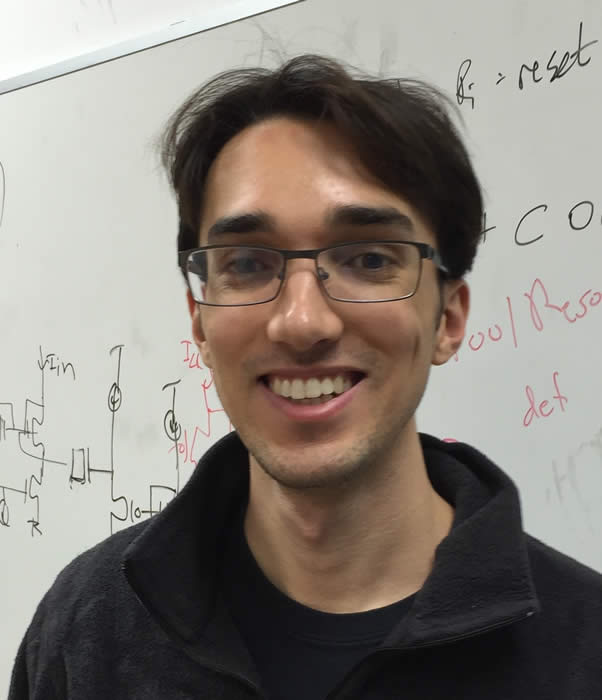

|  |
I joined Boston University as an assistant professor in the ECE department in the Fall of 2020. Previously, I was a research scientist at Google.
I earned a PhD in computer science at Stanford
University in 2018, and am also a graduate of the Masters in Medicine program. I'm currently
excited about optimization algorithms for machine learning. I have recently worked on non-convex optimization as well as adaptive online learning.
My advisor was Kwabena Boahen. My email address is ashok (at) cutkosky (dot) com. |